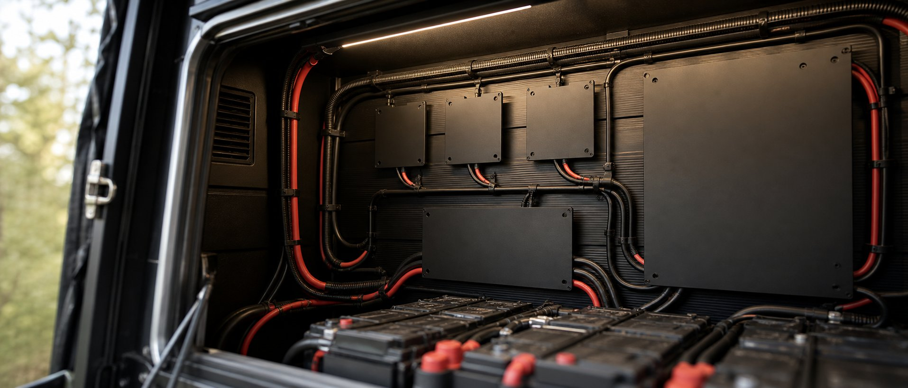

Wat is er aan de hand?

BS 7671 is het Britse equivalent van onze NEN 1010: het dikke boek waar elektrische installaties aan moeten voldoen. In april verscheen Amendment 4, en sinds 15 oktober 2026 is dat de enige geldende versie. De oude norm is ingetrokken. Nieuw werk aan een Britse camper, dus ook een accu, omvormer of zonnepaneel erbij, moet vanaf nu aan de nieuwe regels voldoen. Bestaande installaties hoeven niet verbouwd te worden.
Het opvallende aan deze ronde: de wijzigingen raken juist de dingen waar zelfbouwers mee worstelen. Accu's, omvormers, soepele draad en de walstroomkabel. Britse regels gelden niet in Nederland, maar ze zijn gebaseerd op dezelfde Europese afspraken als de onze en lopen vaak voorop. Zie het als gratis huiswerk van een strenge leraar.
Les 1: je accu is een bron, geen verbruiker
De norm behandelt een accu nu uitdrukkelijk als stroombron, vergelijkbaar met een aggregaat, en niet langer als zomaar een apparaat. Er kwam zelfs een eigen hoofdstuk voor accu-opslag, met eisen aan ventilatie, een eigen scheidingsmogelijkheid per accucircuit en beveiliging aan de gelijkstroomkant.
Voor jouw bouw betekent dat denken: alles wat aan de accu hangt, kan in de fout gaan, dus elke draad vanaf de pluspool krijgt zo dicht mogelijk bij de accu een zekering. En de accu zelf moet je met één handeling helemaal kunnen loskoppelen. Een hoofdschakelaar van een paar tientjes regelt dat. Wie bij ons de samensteller gebruikt, ziet die zekeringen en hoofdschakelaar standaard in de lijst staan. Dat is dus geen overdreven voorzichtigheid, dat is precies waar de normen heen bewegen.
Les 2: soepele draad eindigt in een adereindhuls
In een camper gebruik je soepele draad met fijne aders, omdat starre huisinstallatiedraad breekt door de trillingen. De Britse norm eist nu expliciet dat zulke fijnaderige draad een passende afwerking krijgt: een geperste adereindhuls of kabelschoen in plaats van een kaal gedraaid uiteinde in een schroefklem.
En dan het klassieke foutje: de uiteinden vertinnen met een soldeerbout. Voelt degelijk, is het niet. Soldeer kruipt onder druk langzaam weg, waardoor de klem na verloop van tijd los gaat zitten. Een losse verbinding wordt warm, en warmte in een houten meubel is het laatste wat je wilt. Koop dus geen "handige" voorvertinde draadsets, maar een adereindhulzentang met een doosje hulzen. Kost samen minder dan een tank diesel en gaat je hele bouw mee.
Les 3: omvormer-lader? Reken met de optelsom
Veel campers hebben een combi-apparaat dat walstroom doorlaat én bijspringt vanuit de accu als je meer vraagt dan de camping levert. Handig, maar de Britse norm wijst nu op het addertje: achter zo'n apparaat kan méér stroom lopen dan de walstroomaansluiting alleen levert. De kabels en de groepenkast daarachter moeten op die optelsom berekend zijn, niet op de 10 ampère van het campingpaaltje.
Heb jij zo'n omvormer-lader met hulpfunctie, of wil je er een, kijk dan in het datablad wat het apparaat maximaal kan doorgeven en dimensioneer daarop. Bij twijfel: een maat dikker is nooit fout, een maat dunner wel.
Les 4: de walstroomkabel is geen verlengsnoer
De norm schrijft voor de aansluitkabel tussen paal en camper nu een ander kabeltype voor, met een voorkeur voor een oranje mantel zodat hij opvalt op de camping. Welk lettercombinatietype precies is voor Nederland minder interessant dan de gedachte erachter: die kabel ligt in de regen, wordt overreden en moet 16 ampère aankunnen. Een huis-tuin-en-keuken haspel van de bouwmarkt hoort daar niet. Koop een echte CEE-kabel met rubbermantel van 2,5 mm², en rol een haspel altijd helemaal af voordat je er vermogen doorheen jaagt.
Nee. BS 7671 is Brits en geldt alleen daar. In Nederland kijkt de RDW bij een keuring vooral naar veiligheid en, bij grotere verbouwingen, naar storingseisen. Daarover schreven we eerder dit stuk over ECE R10. Maar een keurmeester die een nette installatie met zekeringen, adereindhulzen en een hoofdschakelaar ziet, heeft een stuk minder vragen. Bouw dus alsof de strenge Brit meekijkt.
Veelgestelde vragen
Moet ik mijn bestaande installatie nu aanpassen?
Nee. Zelfs in het Verenigd Koninkrijk hoeven bestaande installaties niet verbouwd te worden, alleen nieuw werk valt onder de nieuwe regels. Maar vertinde draadeinden in schroefklemmen zou ik overal ter wereld vervangen door adereindhulzen. Dat is een middagje werk.
Ik soldeer al jaren, is dat echt zo erg?
Solderen is prima voor printplaten en kabelsplitsingen met krimpkous. In een schroef- of veerklem hoort het niet, omdat soldeer onder klemdruk vervormt. Daar is de adereindhuls voor uitgevonden.
Waar vind ik wat er in mijn camper minimaal nodig is?
Begin bij de samensteller: die rekent uit welke accu, zekeringen en draaddiktes bij jouw verbruik horen. En lees LiFePO4 of AGM als je nog voor de accukeuze staat.